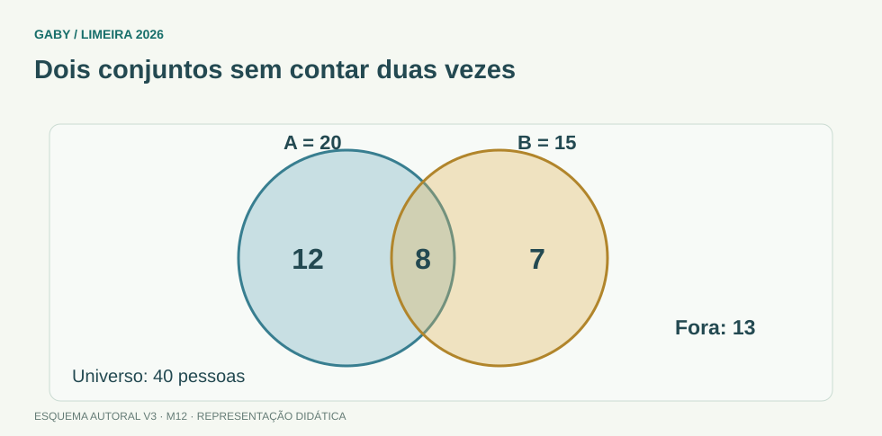

Objetivos do módulo
- Representar conjuntos por diagramas.
- Interpretar “todo”, “algum” e “nenhum”.
- Resolver problemas de contagem simples com união e interseção.
Dois conjuntos sem contar duas vezes

Descrição em texto do esquema
- Somente A: 12 pessoas
- A e B: 8 pessoas
- Somente B: 7 pessoas
Oficina visual · aplique o esquema
Em um grupo de 40 pessoas, 20 usam A, 15 usam B e 8 usam ambos. Quantas não usam nenhum?
Atividade autoral complementar da V3. Registre sua resposta; a resolução está no arquivo de gabarito e revisão.
1. Linguagem de conjuntos
“Todo A é B” significa A contido em B. “Nenhum A é B” significa conjuntos disjuntos. “Algum A é B” exige interseção não vazia. Desenhar círculos reduz ambiguidade.
2. União e interseção
União A∪B reúne elementos de A ou B; interseção A∩B reúne elementos comuns. Para contagem de dois conjuntos: |A∪B|=|A|+|B|−|A∩B|.
3. Complemento
Complemento de A, dentro de um universo U, são elementos de U que não pertencem a A. Questões “não usa nenhum dos dois serviços” frequentemente pedem complemento da união.
4. Estratégia
Preencha primeiro a interseção, depois as regiões exclusivas, por fim o exterior. Isso evita contar duas vezes.
Exemplos resolvidos passo a passo
Exemplo 1
Situação: 30 usam A, 20 usam B e 8 usam ambos. Quantos usam ao menos um?
Exemplo 2
Situação: Universo 50; 42 usam ao menos um. Quantos nenhum?
Exemplo 3
Situação: “Todo secretário é servidor.”
Pegadinhas e erros frequentes
- Somar conjuntos sem descontar interseção.
- Confundir “algum” com “todos”.
- Desenhar “nenhum” com sobreposição.
Resumo de prova
- Todo A é B → A⊂B.
- Nenhum A é B → sem interseção.
- Algum A é B → interseção existe.
- |A∪B|=|A|+|B|−|A∩B|.
Exercícios do módulo
Resolva sem consultar o arquivo de gabarito. As questões são autorais e construídas para treinar os conceitos do edital.
- 10
- 30
- 35
- 40
Fontes: IMPA/OBMEP — Conjuntos · IMPA/OBMEP — Introdução à Lógica Matemática.
- 10
- 70
- 30
- 5
Fontes: IMPA/OBMEP — Conjuntos · IMPA/OBMEP — Introdução à Lógica Matemática.
- A contido em B
- B contido em A
- A=B
- interseção vazia
Fontes: IMPA/OBMEP — Conjuntos · IMPA/OBMEP — Introdução à Lógica Matemática.
- B⊂A necessariamente
- A vazio obrigatoriamente
- A⊂B
- A e B disjuntos
Fontes: IMPA/OBMEP — Conjuntos · IMPA/OBMEP — Introdução à Lógica Matemática.
- nenhum B é A
- interseção não vazia
- A=B
- todos A são B
Fontes: IMPA/OBMEP — Conjuntos · IMPA/OBMEP — Introdução à Lógica Matemática.
- A ou B
- apenas ambos
- fora de A e B
- nenhum
Fontes: IMPA/OBMEP — Conjuntos · IMPA/OBMEP — Introdução à Lógica Matemática.
- todos do universo
- exclusivos de A
- complemento
- elementos comuns
Fontes: IMPA/OBMEP — Conjuntos · IMPA/OBMEP — Introdução à Lógica Matemática.
- B inteiro
- universo
- a interseção
- A inteiro
Fontes: IMPA/OBMEP — Conjuntos · IMPA/OBMEP — Introdução à Lógica Matemática.
- universo vazio
- elementos do universo fora de A
- A∩A
- A inteiro
Fontes: IMPA/OBMEP — Conjuntos · IMPA/OBMEP — Introdução à Lógica Matemática.
- preencher interseção primeiro
- ignorar interseção
- somar tudo duas vezes
- não definir universo
Fontes: IMPA/OBMEP — Conjuntos · IMPA/OBMEP — Introdução à Lógica Matemática.
Quando terminar, abra Raciocínio Lógico 12 - Diagramas Lógicos e Situações-Problema - Gabarito e Revisão.
Checklist de domínio
- ☐ Representar conjuntos por diagramas.
- ☐ Interpretar “todo”, “algum” e “nenhum”.
- ☐ Resolver problemas de contagem simples com união e interseção.
Meta do módulo: 80% ou mais nas questões, sem depender de consulta.
Referências e conteúdos auxiliares
- IMPA/OBMEP — ConjuntosRelações de inclusão, propriedades e operações com conjuntos.
- IMPA/OBMEP — Introdução à Lógica MatemáticaMateriais e videoaulas introdutórias para raciocínio e linguagem lógica.
Referências externas de apoio consultadas para a V3 em 27/09/2026. A origem das questões é o material autoral do projeto; estes links não indicam que uma instituição publicou ou validou os exercícios. As páginas externas precisam de internet. Em informática, confira a versão do programa; em legislação, observe o recorte e as regras de atualização do edital.